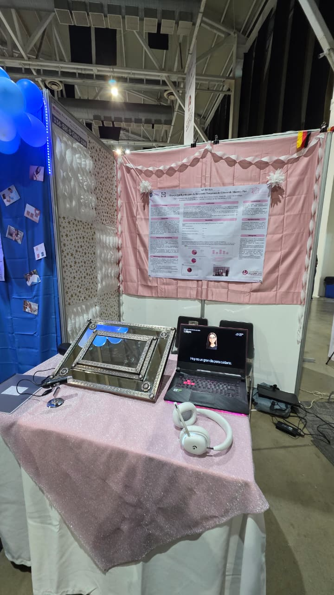

Smart Medical IoT
AURORA
Software & AI architecture for preventive health. Integrated local Deep Learning models, offline voice control on Raspberry Pi OS, and built the companion Flutter application. Awarded 1st place in National Young Talents.
Python • Edge AI • Linux
